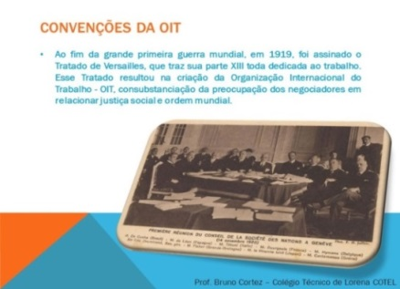

Decreto n.º 41.721, de 25 de junho de 1957 - a Convenção n.º 81 da OIT passou a integrar o ordenamento jurídico interno do país.
Dispondo sobre a criação de um serviço governamental de inspeção do trabalho, dando poderes aos inspetores para ingressarem a qualquer horário do dia ou da noite nos locais de trabalho, com a finalidade de assegurar o cumprimento da legislação social nas indústrias.